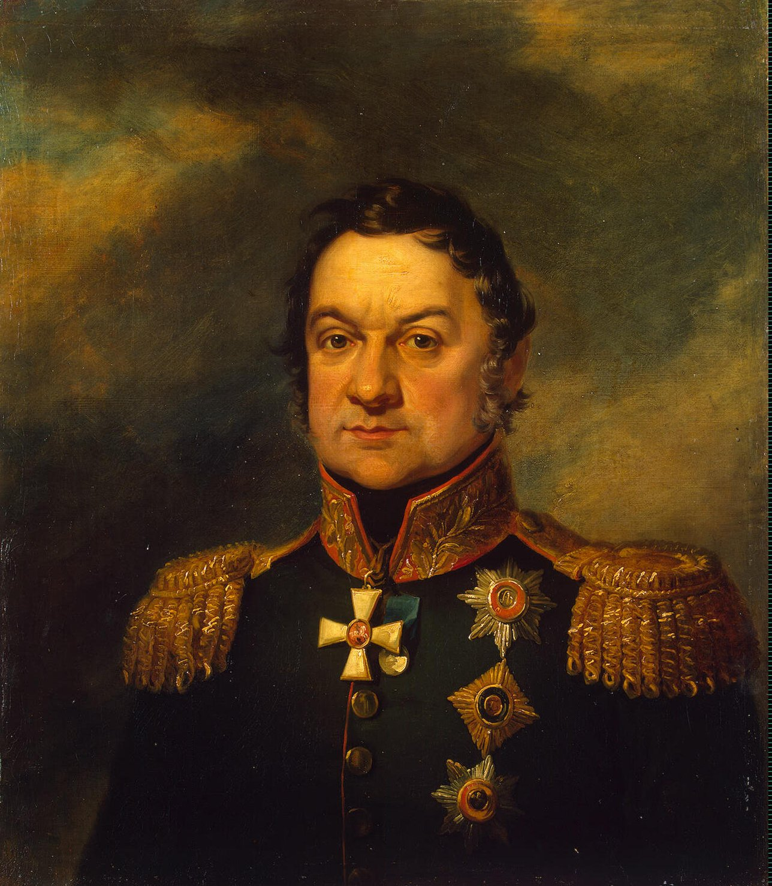
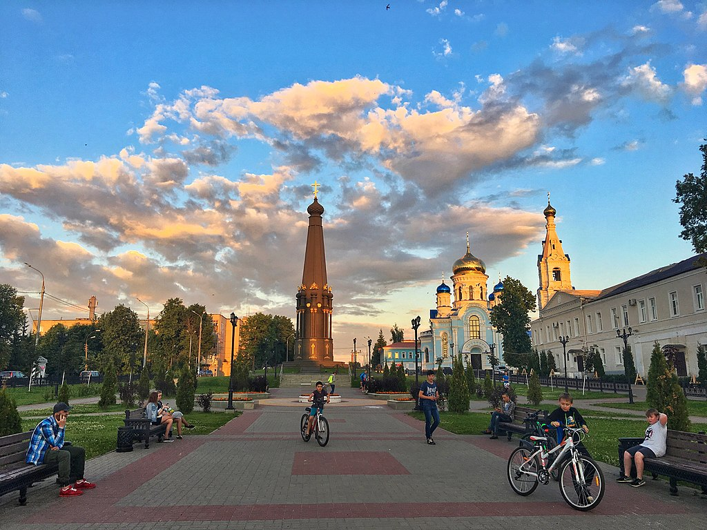
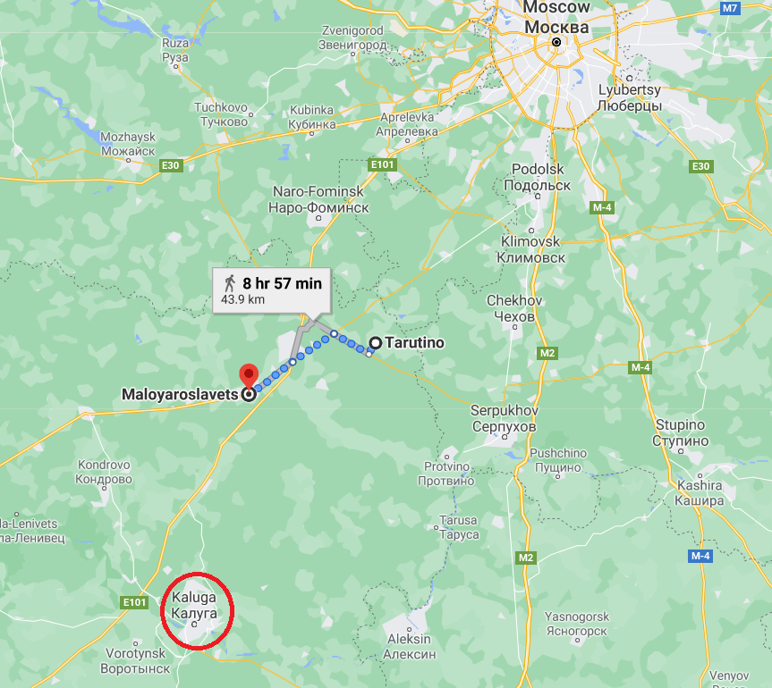

상대는 "쿠투조프+나폴레옹" - 말로야로슬라베츠를 향하여
게시: 2021-05-17T06:30:42+09:00
나폴레옹이 10월 18일 저녁부터 모스크바에서 병력을 빼기 시작했다는 소식은 불과 10시간도 안되어 타루티노의 쿠투조프에게 그대로 전달되었습니다. 이 기쁜 소식을 전달한 것은 볼고프스키(Bolgovsky)라는 이름의 중위였는데, 새벽에 말을 달려온 그는 참모들에 의해 쿠투조프의 침실로 직접 안내되었습니다. 침실에 가보니 자다 일어나 훈장이 주렁주렁 달린 프록코트를 어깨에 걸친 채 침대에 앉은 노친네가 '말해보게 친구'라며 소식을 재촉했는데, 프랑스군이 철수하고 있다는 소식을 듣자 쿠투조프는 과장된 표정과 몸짓으로 흐느끼며 방 한구석의 성상을 향해 "주여 감사합니다, 드디어 저의 기도를 들어주셨군요. 이제 러시아는 구원받았습니다!" 라며 감사를 드렸습니다. 그러나 쿠투조프와의 착각과는 달리, 나폴레옹은 적어도 겉으로는 허겁지겁 짐을 싸서 서쪽으로 줄행랑을 치는 것이 아니었습니다. 그는 똑바로 쿠투조프가 쳐자고 있던 타루티노로 내려오고 있었습니다. 사람은 원래 듣고 싶은 것만 듣고 믿고 싶은 것만 있는다고, 나폴레옹이 도망친다고 착각했던 것은 대부분의 러시아인들도 마찬가지였습니다. 모스크바 북서쪽 일대에서 유격 기병대를 이끌고 그랑다르메의 활동을 괴롭히던 빈칭게로더(Ferdinand von Wintzingerode)도 프랑스군이 모스크바를 떠났다는 소식을 듣고 서둘러 모스크바로 말을 달려왔다가 모스크바를 지키고 있던 모르티에 군단의 순찰대에 의해 사로잡히는 신세가 되었습니다.

(전에 소개드렸던 빈칭게로더(Ferdinand von Wintzingerode)입니다. 그가 포로가 된 이유는 위와 같이 정보 부족에 의해 지나치게 서둘러 입성했다가 잡혔다는 썰과, 모르티에 원수가 크레믈린 궁전을 폭파하려고 한다는 말을 듣고 그를 막기 위해 백기를 들고 크레믈린의 모르티에를 찾아갔다가 체포되었다는 썰이 있습니다. 아무튼 그는 프랑스로 끌려가던 도중 러시아군에게 구조되었고 1813년 라이프치히 전투에도 참전했습니다.) 하지만 쿠투조프가 그저 바보처럼 낙관적이었던 것은 아니었습니다. 쿠투조프는 나폴레옹이 모스크바를 나와서 어떻게 하고 있는지 정찰해보라고 독투로프(Dmitry Dokhturov)에게 군단급의 병력을 거느리고 북진하도록 했습니다. 그가 곧장 외젠의 제4 군단, 그러니까 이탈리아 군단이 남진하고 있다는 것을 탐지했습니다. 마음 속으로 쿠투조프를 게으름뱅이에 겁쟁이라고 욕을 하고 있던 독투로프는 이 절호의 기회를 맞아 외젠의 제4 군단을 공격하기로 마음 먹었습니다. 그러나 그에게는 천만다행히도, 정찰병들이 잡아온 포로들을 취조해보니 놀랍게도 그의 앞에 놓인 것은 외젠 군단 뿐만 아니라 나폴레옹의 그랑다르메 전체였습니다. 그리고 그들이 향해고 있는 곳은 쿠투조프가 주둔하고 있던 타루티노가 아니었습니다. 타루티노의 약간 서쪽인 말로야로슬라베츠(Maloyaroslavets)라는 마을이었습니다.

(독투로프(Dmitry Dokhturov)입니다. 쿠투조프를 성인처럼 묘사해놓은 톨스토이의 '전쟁과 평화'에서 독투로프는 일을 워낙 조용하게 잘 해서 높게 인정 받지 못하는 사람으로 묘사된다고 합니다. 실제로도 그의 전과는 매우 저조하여, 제대로 된 승리를 거둔 적은 거의 없고 주요 패배에는 빠짐없이 이름을 올렸습니다.) 원래 나폴레옹은 모스크바를 떠날 때만 해도 쿠투조프가 주둔한 타루티노로 진격할 생각이었습니다. 그러나 2일 만인 10월 21일, 그는 방향을 틀어 길이 없는 황야를 가로지르는 수고를 무릅쓰고 좀더 서쪽에 있는 신(新) 칼루가 대로를 타고 남쪽이 아닌 남서쪽을 향하기 시작했습니다. 그는 외젠의 제4 군단에게 걸음을 빨리 하여 전방의 작은 마을 말로야로슬라베츠를 점령하라고 명령했습니다. 그가 왜 갑자기 마음을 바꾸었는지, 혹은 애초부터 타루티노가 아니라 말로야로슬라베츠를 노렸던 것인지는 불분명합니다. 그러나 나폴레옹이 타루티노로 직행하지 않고 말로야로슬라베츠를 선점하려고 했던 것은 매우 훌륭한 결정이었습니다. 타루티노는 이미 러시아군에 의해 장기 주둔을 위해 든든한 방어진지가 구축된 곳이었으므로, 거기를 정면으로 들이치는 것은 현명한 일이 아니었습니다. 그리고 타루티노 그 자체에 든든한 보급창이 있는 것이 아니었고 대개의 보급은 후방의 공업 도시인 칼루가에 의존하고 있었습니다. 그런데 그 인근을 흐르는 루즈하(Luzha) 강변 남안에 접한 작은 마을인 말로야로슬라베츠의 위치는 그 타루티노-칼루가 보급로를 위협하기에 딱 좋은 위치였습니다. 뿐만 아니라, 이 마을은 타루티노를 위협하기에도 좋았지만 나폴레옹이 원할 경우 메딘(Medyn)을 거쳐 서쪽 스몰렌스크로 향하는 도로를 타기에 딱 좋은 위치였습니다. 이 도로는 기존에 그랑다르메가 스몰렌스크에서 모스크바로 진격할 때 사용하지 않은 것이었고 따라서 그 일대는 아직 약탈되지 않은 상태였습니다. 따라서 나폴레옹의 고민, 즉 기존에 진격할 때 사용했던 스몰렌스크 대로를 그대로 되짚어 갈 경우 예상되는 식량 부족 문제를 해결할 수 있었습니다.

(말로야로슬라베츠는 지금도 인구가 3만이 채 안되는 작은 마을입니다. 그럼에도 불구하고 깔끔한 도시 광장이 있는 모습이 참 부럽네요.)

(타루티노와 말로야로슬라베츠, 그리고 모스크바와 저 왼쪽 아래 붉은 원 속의 칼루가의 상대적 위치를 눈여겨 보십시요.)
나폴레옹은 이때 즈음해서는 더 이상 자신의 의도를 대내외적으로 숨길 필요가 없다고 생각했습니다. 그는 방향을 말로야로슬라베츠로 틀면서 모스크바를 지키고 있던 모르티에 원수에게 전령을 보내 모스크바에서 철수하여 모즈하이스크(Mozhaisk)로 후퇴할 것을 명령했습니다. 이때 문제가 되었던 것은 모스크바에 남겨진 많은 부상병들이었는데 나폴레옹은 뻔뻔스럽게도 '내가 시리아 아크레에서 철수할 때 모든 부상병을 챙겼듯이 당신도 그렇게 하기를 바란다'라며 마차에 부상병을 과적하는 것을 두려워 말라고 했습니다. 모즈하이스크에 빈 수레와 말이 잔뜩 있을 거라는 것이 이유였습니다. 그러나 물론 나폴레옹의 이런 말들은 다 거짓이었습니다. 그는 아크레에서 페스트 환자들을 무책임하게 버리고 도망쳤고 일부는 치사량의 몰핀을 먹여 독살했습니다. 아크레에서 많은 부상병/환자들이 이집트로 돌아온 것은 사실이었으나 그건 영국 해군의 동정심 덕분이었습니다. 그리고 모즈하이스크에는 당연히 빈수레와 말들이 없었습니다. 거기에는 쫄쫄 굶어 사기가 바닥인 쥐노의 베스트팔렌 군단만 널브러져 있었습니다. 그리고 나폴레옹은 자신이 진짜 악당이라는 것을 입증이라도 하듯, 모르티에에게 크레믈린 궁전을 산산조각으로 폭파하라고 명령했습니다. 그러나 천만다행으로, 많은 수의 뇌관이 제대로 작동하지 않아 크레믈린은 대폭발을 겪고 상당히 파손되었으나 전체적으로는 파괴를 피할 수 있었습니다. 한편, 포로를 통해 나폴레옹의 1차 목적지가 말로야로슬라베츠라는 것을 알게 된 독투로프는 그 전략적 위치의 중요성을 재빨리 알아챘습니다. 그는 즉각 쿠투조프에게 이 사실을 전달하고 서둘러 방향을 틀어 말로야로슬라베츠로 향했습니다. 그는 자신이 외젠보다 다소 늦었다는 것을 알고 서둘러 움직였지만 그다지 초조해하지는 않았습니다. 말로야로슬라베츠의 위치는 자신이나 외젠의 현재 위치보다 쿠투조프의 본대가 있는 타루티노에 더 가까왔기 때문이었습니다. 그는 쿠투조프의 본대가 말로야로슬라베츠에 먼저 도착할 것임을 믿어 의심치 않았습니다. 그러나 톡투로프는 밖으로는 나폴레옹에게, 안으로는 쿠투조프에게 그토록 당해놓고도 아직 정신을 못 차렸으니 무능한 지휘관이 맞는 셈이었습니다. 상대는 "쿠투조프+나폴레옹"이었습니다. 10월 24일 새벽, 간신히 루즈하 강가 말로야로슬라베츠 앞에 도착한 독투로프의 눈에 들어온 것은 그랑다르메가 득실거리는 모습이었습니다. 쿠투조프의 모습은 어디에도 보이지 않았습니다. 이제 나폴레옹은 후퇴를 하든 습격을 하든 유리한 위치에 서게 되었습니다. Source : 1812 Napoleon's Fatal March on Moscow by Adam Zamoyski